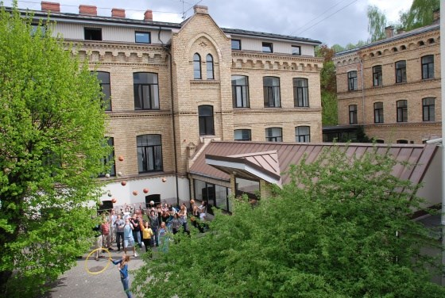

Izglītība



Es savas skolas gaitas sāku Andreja Pumpura Rīgas 11. pamatskolā, kur mācījos no 1. līdz 6. klasei. Pēc tam turpināju mācības Āgenskalna Valsts ģimnāzijā, kur apguvu 7.–9. klases programmu un attīstīju kritisko domāšanu, pašdisciplīnu un sadarbības prasmes. Pašlaik mācos Salaspils 1. vidusskolas 10.b klasē, turpinot padziļināt savas zināšanas, piedalīties projektos un sagatavoties vidusskolas noslēguma eksāmeniem.